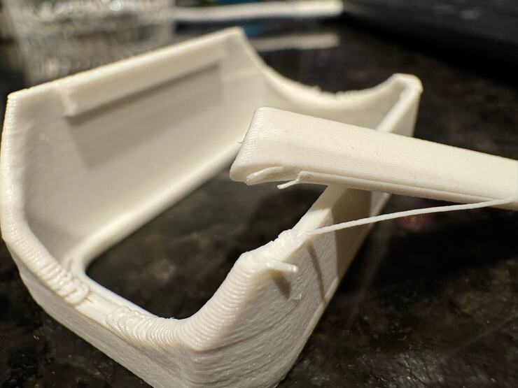
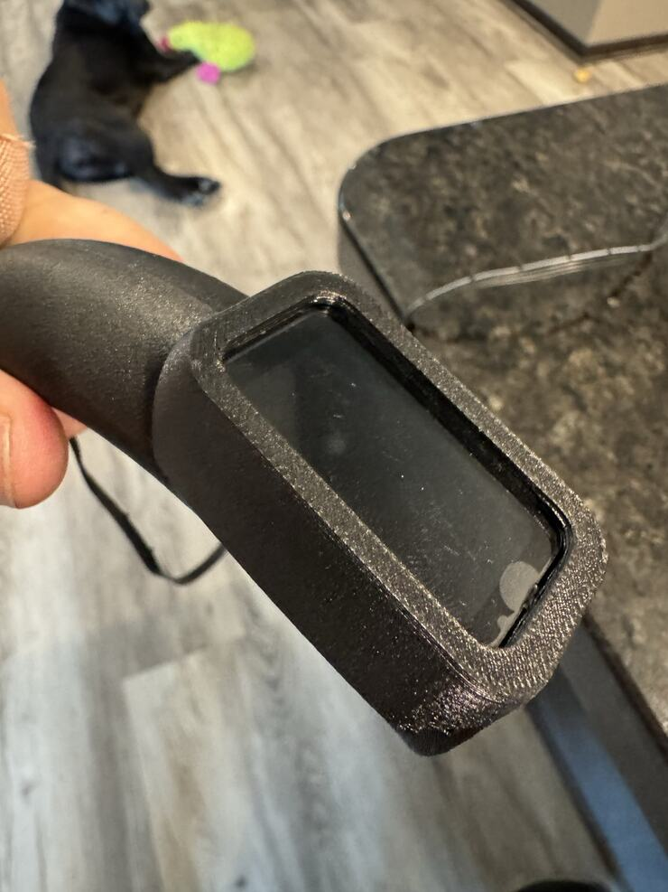

Cooling
Fan only where the plastic is over air.
The part fan blows room air at the plastic as it leaves the nozzle. A road laid over air needs that, to set before it sags. A plain wall of PET-GF does not. Printed with the fan on everywhere, thin covers cracked along their layers in the hand.
Seen in white and black PET-GF · Mark2 · textured PEI · right and left 0.4 mm nozzlesNot tried in: PETG. Soft TPU wants the opposite: its sleeve prints with this fan at {{petgf-setup-tpu-sleeve:/fan_min_speed/0}} % (the TPU part)


“That new printed cover works great. In fact, it worked so well that the other parts of the faucet broke while I was trying to put that cover on, which I think really indicates that we have a brittleness issue with those cooling settings that we need to be aware of.”
One change. That afternoon the cracked cover’s file was printed again with every fan setting at zero. Shape, temperatures, speeds and supports stayed as they were. It took the display and went on. By evening the fan was back, on bridges and overhangs only.
Walls, infill and top faces are laid with the fan at rest. On the first faucet printed this way, 17 October 2026, over 99 percent of the cover’s outer wall was laid with it off.
The slicer asks how much of a road must hang over air before the fan comes on. Ours is {{petgf:/overhang_fan_threshold/0}}. At zero, Bambu Studio cools every outer wall, overhang or not. The cracked covers’ file carried a zero.
A road pulled across a gap is laid slowly, with the fan on. With no fan at all, on 24 September 2026, a rounded underside in fine layers “turned out worse. Exploded basically.”
The slicer cools a bridge and then stops. On 5 November 2026 the course laid on a fresh bridge came off “stringy and loose”: fan off, at up to 200 mm/s. Now fan and bridge speed are kept for {{scalars:/petgf_cooling/FOUNDATION/height_mm}} mm above.
“the cooling, high cooling, is totally fine. We can use 100% cooling if we want, but only on the places that actually need it, and everywhere else we shouldn’t be using that cooling.”
Still openWhy the covers cracked is not established: the fan was the one thing changed between the cover that broke and the one that held, and no strength was measured. The cooling kept above a bridge has been read in each file’s commands since 6 November 2026. No print has yet been judged for it.